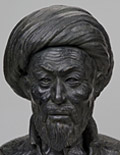

главная  персоналии
персоналии  Улугбек
Улугбек
главная |

Личность в историикраткая энциклопедияПроект «Личность в истории» посвящен людям — современникам грандиозных исторических событий, носителям редких качеств или людям, взгляды которых опередили их время. |
|||||
Коротко |
Статьи |
Персоналии |
Литература |
||
Улугбек |
|||||
|
«Все сородичи Улугбека ушли в небытие. Кто о них вспоминает в наше время? Но Улугбек протянул руку к наукам и добился многого». (Алишер Навои). |
 Улугбек. |
||||
Биографическая справкаУлугбек, Мухаммед Тарагай, (1394–1449), Внук Тимура, правитель Самарканда, затем султан, выдающийся астроном, ученый, исследователь. Создатель знаменитолй самаркандской обсерватории. Убит в результате заговора, по приказу собственного сына. Цитаты«В основе астрономических работ Улугбека, в частности его астрономических таблиц ("Зидж Улугбека"), как и ряда представителей его школы, лежит геоцентрическая система мира. Заслугой его является открытие решения алгебраических уравнений третьей степени. Большое значение для развития науки и культуры имело сонованное им в Самарканде медресе... <...> В медресе и обсерватории работали известные математики Кази-задэ Руми, Гийяс уд-дин Джемшид и др. Слушать лекции Улугбека и других прославленных мудрецов в медресе приезжали ученые и поэты из многих городов Востока.» (История Востока. Т. 2.: Восток в Средние века., «Султан Шахрух перенёс столицу в город Герат, а Мавераинахр отдал в удел своему старшему сыну Улугбеку, который правил в Мавераннахре в 1409—1447 гг., а после смерти Шахруха стал султаном всего Тимуридского государства (1447—1449 гг.). Улугбек приобрёл известность
не столько своей государственной деятельностью, сколько тем, что при нём Самарканд превратился в крупный центр научной и культурной жизни. (ВСЕМИРНАЯ ИСТОРИЯ В ДЕСЯТИ ТОМАХ., Список литературы
|
|||||
|